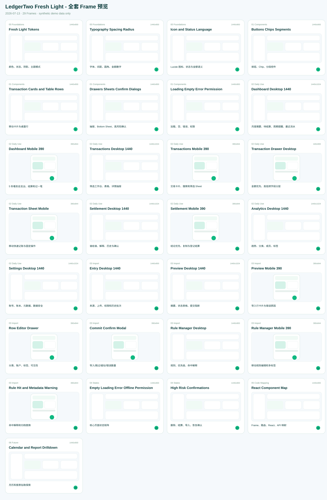

LedgerTwo Fresh Light 全套预览
覆盖 Frame Manifest 的 29 个设计 Frame。全部使用脱敏示例数据。
这是仓库内可审阅目标稿，不代表前端代码或 Figma 节点已经同步。运行 python generate_previews.py 可生成 PNG 和 PDF。

| # | Page | Frame | Size | Purpose |
|---|---|---|---|---|
| 1 | 00 Foundations | Fresh Light Tokens | 1440x900 | 颜色、状态、阴影、主题模式 |
| 2 | 00 Foundations | Typography Spacing Radius | 1440x900 | 字体、间距、圆角、金额数字 |
| 3 | 00 Foundations | Icon and Status Language | 1440x900 | Lucide 图标、状态与金额语义 |
| 4 | 01 Components | Buttons Chips Segments | 1440x900 | 按钮、Chip、分段控件 |
| 5 | 01 Components | Transaction Cards and Table Rows | 1440x900 | 移动卡片与桌面行 |
| 6 | 01 Components | Drawers Sheets Confirm Dialogs | 1440x900 | 抽屉、Bottom Sheet、高风险确认 |
| 7 | 01 Components | Loading Empty Error Permission | 1440x900 | 加载、空、错误、权限 |
| 8 | 02 Daily Use | Dashboard Desktop 1440 | 1440x1024 | 月度摘要、待结算、周期提醒、最近流水 |
| 9 | 02 Daily Use | Dashboard Mobile 390 | 390x844 | 5 秒看到总支出、结算和记一笔 |
| 10 | 02 Daily Use | Transactions Desktop 1440 | 1440x1024 | 筛选工作台、表格、详情抽屉 |
| 11 | 02 Daily Use | Transactions Mobile 390 | 390x844 | 交易卡片、搜索和筛选 Sheet |
| 12 | 02 Daily Use | Transaction Drawer Desktop | 440x900 | 金额优先、高低频字段分层 |
| 13 | 02 Daily Use | Transaction Sheet Mobile | 390x844 | 移动快速记账与固定操作 |
| 14 | 02 Daily Use | Settlement Desktop 1440 | 1440x1024 | 谁给谁、解释、历史与确认 |
| 15 | 02 Daily Use | Settlement Mobile 390 | 390x844 | 结论优先、复制与登记结算 |
| 16 | 02 Daily Use | Analytics Desktop 1440 | 1440x1024 | 趋势、分类、成员、标签 |
| 17 | 02 Daily Use | Settings Desktop 1440 | 1440x1024 | 账号、账本、元数据、数据安全 |
| 18 | 03 Import | Entry Desktop 1440 | 1440x900 | 来源、上传、权限和历史批次 |
| 19 | 03 Import | Preview Desktop 1440 | 1440x1024 | 摘要、状态表格、提交阻断 |
| 20 | 03 Import | Preview Mobile 390 | 390x844 | 导入行卡片与错误原因 |
| 21 | 03 Import | Row Editor Drawer | 390x844 | 分类、账户、标签、可见性 |
| 22 | 03 Import | Commit Confirm Modal | 390x844 | 导入/跳过/疑似/错误数量 |
| 23 | 03 Import | Rule Manager Desktop | 1440x900 | 规则、优先级、命中解释 |
| 24 | 03 Import | Rule Manager Mobile 390 | 390x844 | 移动规则编辑和多标签 |
| 25 | 03 Import | Rule Hit and Metadata Warning | 390x844 | 命中解释和归档替换 |
| 26 | 04 States | Empty Loading Error Offline Permission | 1440x900 | 核心页面状态矩阵 |
| 27 | 04 States | High Risk Confirmations | 1440x900 | 删除、结算、导入、恢复确认 |
| 28 | 05 Code Mapping | React Component Map | 1440x900 | Frame、路由、React、API 映射 |
| 29 | 06 Future | Calendar and Report Drilldown | 1440x900 | 月历和报表钻取探索 |